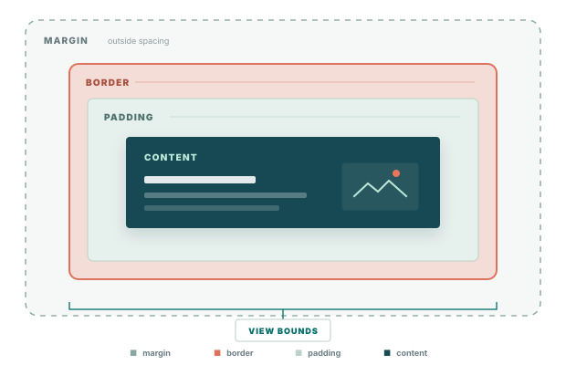

애플리케이션 계약
View와 컴포넌트, 레이아웃, 상태와 이벤트, 텍스트 등 앱이 사용하는 ABI 안정 인터페이스입니다.
DALi 기반 애플리케이션을 위한 Native UI Framework
DALi UI는 애플리케이션이 Native 환경에서 화면을 구성하고 운영하는 데 필요한 공통 UI 기능을 제공합니다. View와 Layout을 기반으로 상태와 이벤트, 화면 이동, Theme, Text, Scroll과 Focus까지 하나의 Framework 범위로 구성했습니다.
203개의 public header는 앱에 열린 기능의 폭을, 2,806개의 자동화 테스트는 그 동작을 지속적으로 검증하는 규모를 보여줍니다. 94개의 visual test sample은 46개 sample과 48개 manual TC를 합산했습니다. 수치는 DALi UI devel bb386e86 기준입니다.
API Structure는 앱과 확장 라이브러리가 지원 범위에 맞는 인터페이스에만 의존하도록 구분하기 위한 구조입니다. Public, Extension, Integration API와 Foundation, Components 라이브러리로 구성됩니다.
View와 컴포넌트, 레이아웃, 상태와 이벤트, 텍스트 등 앱이 사용하는 ABI 안정 인터페이스입니다.
플랫폼별 정책과 구현을 연결하되 앱 API에는 노출하지 않는 확장 계약.
확장 라이브러리가 layout과 component 동작을 Framework 수준에서 연결할 때 사용하는 개발 계약.
View, layout, event, trait, focus, scroll, text와 configuration을 제공합니다.
Foundation API를 사용해 Navigator, ChartView와 같은 상위 컴포넌트를 제공합니다.
View는 모든 UI 컴포넌트가 layout, 상태, interaction과 system 변경을 같은 방식으로 처리하도록 하는 공통 객체입니다. 화면을 구성하는 가장 기본 단위이며 content, padding, border와 margin으로 이루어진 box model을 구현합니다.

Unit은 해상도와 pixel density가 다른 디바이스에서도 UI가 의도한 크기로 표시되도록 합니다. 제품별 scaling factor와 system scale도 같은 단위 정책에서 처리합니다.
코드에 작성하는 크기에는 제품 scaling factor와 device DPI를 반영하고, 실행 중 변경되는 system scale은 View tree에 전달합니다.
spx, dp, sdp 단위와 system scale 반영 여부를 View별로 선택하는 정책을 제공합니다.
dp/sdp/spx는 코드에 작성한 값을 pixel로 변환합니다. 시스템 접근성 배율이 바뀌면 현재 화면의 text와 layout을 새 배율에 맞춰 갱신합니다.
UiScalePolicy::INHERIT / ENABLED / DISABLED로 부모 정책을 따르거나 system scale 적용 여부를 직접 지정할 수 있습니다.
Configuration은 UX와 디바이스에 따라 달라지는 공통 정책을 한곳에서 설정하기 위한 기능입니다. 앱과 화면마다 같은 설정을 반복하거나 제품별 분기 코드를 두지 않도록 합니다.
Scale과 density, input과 gesture, focus, text 기본값, theme, asset과 platform service를 전역 설정으로 관리합니다.
제품에서 선택한 scale, input, focus, text와 theme 기준을 모든 View와 컴포넌트가 동일하게 사용합니다.
State & Event Management는 touch, key와 accessibility처럼 서로 다른 입력을 앱이 사용할 수 있는 일관된 상태와 상위 이벤트로 변환합니다. Click과 long press 판정, pressed 상태 관리를 화면마다 구현하지 않아도 됩니다.
Focus, press, hover, disable, select 상태와 touch, key, tap, long press, accessibility 입력을 함께 처리합니다.
View의 상태 변화와 click, long press, pressed change처럼 입력 방식과 무관한 상위 이벤트를 제공합니다.
상태가 바뀌기 전과 후의 값뿐 아니라 변화를 일으킨 입력도 함께 전달합니다. 앱은 같은 상태 변화라도 touch, key 등 원인에 따라 다르게 대응할 수 있습니다.
기본 View에 interaction이나 selection이 필요할 때 해당 기능만 더할 수 있습니다. 화면 구조를 바꾸거나 별도의 control class를 새로 만들지 않아도 됩니다.
Layout은 화면 크기, text 길이와 system scale이 바뀌어도 View의 크기와 위치를 일관된 규칙으로 계산하기 위한 기능입니다. Stack, Flex, Grid와 Absolute 배치를 제공하고 공통 크기 정책과 transition을 지원합니다.
Stack, Flex, Grid와 Absolute Layout을 제공하며 공통 size policy, margin, padding과 child parameter를 사용합니다.
화면 제약과 content 변화에 맞춰 View의 크기와 위치를 다시 계산하고, layout 종류가 달라도 같은 크기 정책을 적용합니다.
방향, 간격, alignment와 weight 기반 분배
grow, shrink, basis, wrap과 축 정렬
absolute, star, auto 행과 열
pixel 또는 proportional 위치 지정
WRAP_CONTENT, MATCH_PARENT, margin과 padding Insets를 모든 LayoutManager에서 같은 방식으로 사용합니다.
기본 layout으로 표현하기 어려운 배치 규칙을 확장할 수 있습니다. 화면 재배치에는 transition을 적용해 크기와 위치 변화를 자연스럽게 보여줍니다.
ChartView는 앱이 차트의 rendering, data model과 interaction을 각각 구현하지 않고도 데이터를 시각화할 수 있도록 제공합니다. 정적 데이터와 실시간 데이터 모두 같은 컴포넌트에서 처리합니다.
Line, Bar, Pie, Area, Scatter와 Gauge를 지원하며 여러 series를 한 차트에 함께 구성할 수 있습니다.
Series와 axis, tooltip, point selection, zoom, pan, animation과 실시간 데이터 추가를 제공합니다.
AppendValue(s), max points, sliding window와 update throttling을 제공합니다. 새 값을 추가할 때 전체 series를 다시 설정하지 않아도 됩니다.
제목, axis label, legend, tooltip에는 Label을 사용합니다. Animated data transition과 point selection signal도 제공합니다.
Color & Theme은 색상을 화면마다 직접 지정하지 않고 디자인 의미로 관리하기 위한 기능입니다. Theme이나 제품 색상 정책이 바뀌면 이미 표시 중인 View에도 변경 사항을 적용합니다.
직접 지정한 RGBA와 PRIMARY, SURFACE, BACKGROUND 같은 semantic token을 모두 사용할 수 있습니다.
Semantic color와 component style을 theme별로 해석하고, 변경된 색상을 현재 화면에 반영합니다.
고정 RGBA와 PRIMARY, SURFACE, BACKGROUND 같은 token을 지원합니다. ScaleAlpha와 WithAlpha도 제공합니다.
제품은 자체 Theme과 component style을 제공할 수 있고, 앱은 필요한 color token만 바꿀 수 있습니다. 공통 화면 구조를 유지한 채 브랜드와 제품군별 표현을 구분합니다.
Adaptive Text는 사용자가 system font scale이나 언어를 변경했을 때 현재 화면의 text와 layout을 함께 갱신하기 위한 기능입니다. 앱이 화면을 다시 생성하거나 문자열을 일일이 설정하지 않아도 됩니다.
System font scale, locale과 RTL direction 변경을 text control과 View layout에 전달합니다.
Text 크기와 줄바꿈, 자연 크기, 번역 문자열, 접근성 문구와 layout direction이 현재 화면에서 함께 갱신됩니다.
System font scale을 반영하되 화면 설계가 무너지지 않도록 최소·최대 배율을 정할 수 있습니다. 변경된 text 크기에 맞춰 줄바꿈과 주변 layout도 다시 계산합니다.
일반 문자열과 단수·복수 표현을 지원합니다. Label뿐 아니라 입력창 placeholder, 접근성 name과 description도 언어 변경에 맞춰 갱신됩니다.
부모 설정, text 내용 또는 현재 locale을 기준으로 LTR과 RTL 방향을 선택합니다. 언어가 바뀌면 text 정렬과 layout 방향이 함께 맞춰집니다.
고정 크기가 필요한 View는 system scale 적용에서 제외할 수 있고, 특정 문자열은 자동 번역 대신 앱이 지정한 표현을 유지할 수 있습니다.
Enhanced Text는 정보의 구조와 시각 효과가 풍부한 text를 하나의 control에서 표현하기 위한 기능입니다. Rich text, inline content, gradient, fit, marquee와 async rendering을 Label과 text input에 제공합니다.
Label, InputField와 InputEditor에서 rich text, gradient, visual effect, font fit, marquee와 async API를 사용합니다.
Rich text span, inline image, gradient, reveal, bevel, font fit, marquee와 async rendering을 제공합니다.
TextGradient와 TextGradientOverlay는 bounds mode, overlay mode, animatable offset을 제공합니다. 입력 텍스트와 placeholder에도 gradient를 적용할 수 있습니다.
Anchor, Annotation, Image, Replacement span으로 링크, 주석과 inline content를 표현합니다. Markup과 StyledText 간 변환도 지원합니다.
Reveal, Bevel, shadow, outline, underline, line-through를 typed style로 설정합니다. Fit range와 candidate, FontVariation axis도 지정할 수 있습니다.
Marquee trigger, orientation, stop mode와 start/stop API를 제공합니다. Async rendering, natural-size, height-for-width signal도 지원합니다.
Scroller는 touch, key와 focus 이동에서 content가 예측 가능한 위치에 표시되도록 관리합니다. 리모컨이나 키보드로 탐색할 때 focus 대상이 viewport 밖에 남지 않도록 scroll과 focus를 함께 처리합니다.
Pan, key, focus와 programmatic scroll을 지원하며 overscroll, edge effect와 scrollbar 표시 정책을 설정할 수 있습니다.
Touch fling, key step scroll, focus 대상 자동 노출, edge feedback과 scrollbar 표시를 하나의 viewport에서 제공합니다.
SetScrollOnFocus와 MakeVisible, Start, Center, End target policy를 제공합니다. Peek distance도 설정할 수 있습니다.
Key scroll step과 enable 설정을 제공합니다. Pan 입력과 programmatic scroll은 별도로 제어하며 방향은 Vertical, Horizontal, Both 중에서 선택합니다.
Never, Always, ContentScrolls overscroll policy와 start/end EdgeEffect를 제공합니다. Scrollbar는 Auto, Always, Never로 설정합니다.
Scroll과 drag의 시작, 진행, 완료 signal을 제공합니다. Position, child, X/Y 값을 사용해 ScrollTo를 호출할 수 있습니다.
Enhanced Focus System은 리모컨과 키보드로 복잡한 화면을 탐색할 때 사용자가 예상한 위치로 focus를 이동시키기 위한 기능입니다. Android 계열 UIFW에서 익숙한 자식 우선 focus 요청, 방향별 이웃, 영역 단위 탐색과 공간 기반 후보 검색을 View tree에 맞게 제공합니다.
상하좌우, 순방향과 역방향 이동을 지원하며, 지정된 이웃이 없으면 화면상의 위치를 기준으로 다음 대상을 찾습니다.
Container가 첫 child를 선택하고, 제품별 이동 규칙과 focus group 경계를 적용하며, 입력 장치와 Window가 바뀌어도 focus 상태를 일관되게 관리합니다.
Container에 focus를 요청하면 내부에서 가장 적절한 child를 선택합니다. 화면 진입 시 앱이 내부 구조를 직접 탐색할 필요가 없습니다.
제품이 지정한 방향별 이웃을 우선 사용하고, 별도 지정이 없으면 위치와 거리를 기준으로 자연스러운 다음 대상을 찾습니다.
List, menu, carousel처럼 고유한 이동 방식이 필요한 영역은 자체 규칙을 가질 수 있고, 앱은 첫 focus와 공통 예외 규칙을 정할 수 있습니다.
Modal이나 panel 안에 이동을 머물게 하고, 장식용 subtree처럼 focus 대상이 없는 영역은 검색에서 제외할 수 있습니다.
논리적 focus는 유지하면서 indicator만 숨길 수 있습니다. Touch, pointer, remote가 전환되어도 입력 대상과 시각 표현을 따로 제어합니다.
Focus된 항목이 viewport에 보이도록 scroll하고, 여러 Window와 입력 장치가 있는 환경에서도 이동이 시작된 화면의 맥락을 유지합니다.